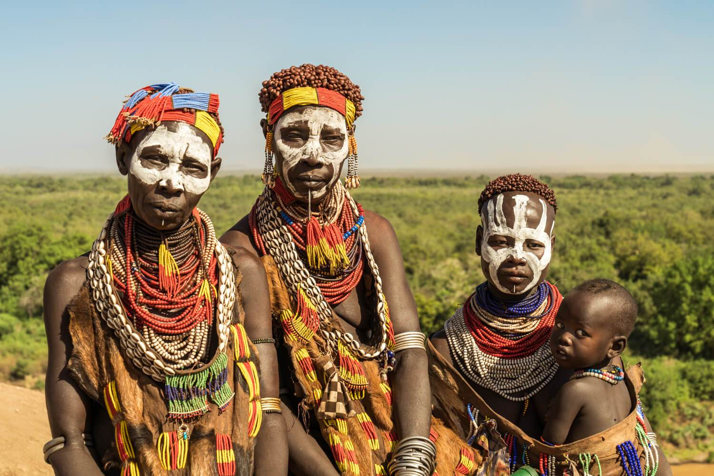

- About Ethiopia
- The Population
- The Land and Topography
- Time and Climate
- Language and Ethnicity

Ethiopia is a land of enormous diversity and as a result Ethiopia has more than 80 languages and over 200 dialects. Amharic or Amharigna is the official language of Ethiopia although the government encourages local languages to be taught in schools. The working languages of the national/regional governments may differ according to regions. Other main languages include Oromigna and Tigrigna are also widely spoken. The variety of the language tells us that the country is ethnically diverse nations. more than 80 differnt ethnic groups are present in Ethiopia. The Oromos constitiute the largest population with 34.4% followed by the Amharas with 27%, Somalis with 6.2%, Tigrayans 6.1%, Sidamas, Gurage, Welayta, Hadiya, Afar, Gamo and Others